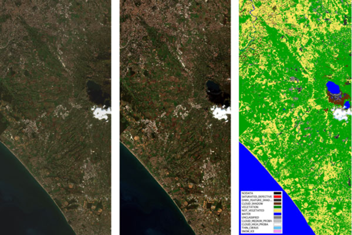

3 Corrections and Enhancements
3.1 Summary
This week, the lecture covered the essentials of preparing and enhancing satellite imagery for analysis, splitting the content into two main parts. The first part focuses on corrections and its different categories: geometric correction aligns distorted images using Ground Control Points (we discussed how to pick these points, noting that features like vegetation are poor choices since they change over time, making them unreliable for ensuring spatial accuracy); atmospheric correction removes haze and scattering effects through methods like Dark Object Subtraction or radiative transfer models; topographic correction adjusts for terrain distortions using elevation models ; and radiometric correction converts Digital Numbers to spectral radiance with gain and bias. The second part covers joining datasets and enhancements: Mosaicking combines overlapping images using feathering to blend them smoothly, adjusting brightness so the edges match seamlessly. Enhancements include contrast stretching to amplify visibility, using band ratios to show things like vegetation more clearly, and applying Principal Component Analysis to simplify complicated data into essential components.
With that being said, it’s important to mention that remote sensing products now often come pre-corrected and enhanced. Yet, understanding these processes remains crucial, as it empowers users to evaluate data quality, address specific project needs, and adjust workflows across diverse satellite sources. As I was trying to understand Analysis Ready Data (ARD), this article helped me understand ARD’s core processing concepts. In addition, this week’s practical highlighted how each satellite offers unique products, and how collections—systematically organized groups of satellite imagery—are categorized into different processing levels, which indicate the degree of preprocessing applied to the data. For instance, Level 1 data includes raw or minimally processed imagery, while higher levels, like Level 3, provide specialized outputs such as vegetation indices or land cover classifications, ready for direct use in applications (Figure 1). ARD brings clear benefits, including time savings, consistency, and accessibility that lowers technical barriers for users. However, its standardized processing may not account for regional variations, such as unique atmospheric conditions or terrain complexities, potentially reducing accuracy in specific contexts. Also, reliance on ARD can lead to a lack of transparency in the preprocessing steps, making it difficult for users to assess or modify the corrections applied. Thus, while ARD streamlines workflows, it is not a one-size-fits-all solution and recognizing its limitations is key to leveraging it effectively.

3.1.1 Dictionary for some new terminologies I learned this week
| Terminology | Meaning |
|---|---|
| Analysis Ready Data | Pre-processed and formatted data that is immediately usable for analysis. |
| Atmospheric attenuation | The reduction of signal strength as electromagnetic waves pass through the atmosphere. |
| Feathering | A technique used to blend the edges of images or data from different sources to create a seamless appearance. |
| Image fusion | When data from multiple sensors/sources is fused together. |
| Irradiance | Downwelling radiation reaching the Earth from the sun. |
| Mosaicking | The process of combining multiple satellite images into a single, larger image. |
| Nadir | The point on the ground directly beneath a satellite or sensor. |
| Path radiance | Radiance reflected above the surface (before reaching the sensor). |
| Pseudo-invariant Features | Areas on the Earth’s surface that remain relatively unchanged over time. |
| Push broom | A sensor that moves in a straight line, continuously capturing data across a wide area. |
| Radiance | Any radiation leaving the Earth. |
| Surface Reflectance | Proportion of light reflected by the Earth’s surface. |
| Spectral radiance | The amount of light within a band from a sensor in the field of view (FOV). |
| Solar Azimuth | The angle between the sun and true north. |
| Solar Zenith Angle | The angle between the local zenith (directly above) and the sun. |
| Whisk broom | A sensor that scans side to side, capturing data line by line. |
* Note: Definitions are based on my understanding, lecture notes, and several academic articles.3.2 Applications
In this section, I wanted to focus on a specific application and discuss the correction technique used with its evolution over the years. Vegetation monitoring is one of the key applications where correction techniques have evolved significantly over the years, driven by advancements in remote sensing and data processing. Vermote et al. (1997) introduced the 6S (Second Simulation of the Satellite Signal in the Solar Spectrum) model, a radiative transfer code that uses inputs like aerosol optical depth, and water vapor to correct Landsat top-of-atmosphere (TOA) radiance to surface reflectance, enabling accurate NDVI for forest monitoring in regions like the Pacific Northwest. The paper confirms its accuracy through comparisons with other codes, achieving relative errors below 5% in reflectance under standard conditions. Hansen et al. (2008) propose an enhanced method integrating MODIS-derived atmospheric data with Landsat imagery, correcting for haze and clouds to monitor forest cover changes in the Congo Basin. More recently, Basener and Basener (2023) proposed a machine learning approach, training Gaussian Process and deep learning models on 100,000 MODTRAN-simulated spectra to correct hyperspectral imagery. By treating atmospheric interference as noise and directly applying radiative transfer physics, their technique improves adaptability to varying environmental conditions, ultimately enhancing NDVI precision.
While 6S offers a robust, standardized baseline, Hansen’s MODIS-Landsat synergy improves large-scale forest monitoring but relies on coarse MODIS inputs, and Basener and Basener’s ML approach excels in flexibility yet demands computational resources. This progression—from physics-based simulation to multi-sensor integration and ML adaptability— highlight how the field is constantly evolving.
3.3 Reflections
Reading more on the techniques covered this week made me reflect on how, while the convenience of pre-processed data is undeniable, it’s worth critically questioning whether these standardized corrections and enhancements are universally applicable. For example, atmospheric correction methods designed for one region might not perform as well in another due to differences in environmental conditions. Similarly, relying solely on higher-level products like vegetation indices could overlook nuances in the raw data that might be critical for specific analyses. For instance, Huete et al. (2002) caution that indices like NDVI can be less reliable in arid or semi-arid regions due to soil background effects, emphasizing the need for region-specific adjustments.
Cloud cover is often cited as one of the main challenges in remote sensing studies, but in the region I come from, the Middle East, I don’t think it’s as critical, and I see sandstorms as another key challenge for the region. Sandstorms introduce high levels of particulate matter into the atmosphere, which can distort spectral signals and reduce the accuracy of standard correction methods. This issue is less frequently addressed in mainstream literature. This gap in the literature is something I plan to explore further to better understand how sandstorms impact remote sensing data and how we can develop more robust correction methods for such environments. Moreover, Standardized approaches provide a foundation, but independent thinking and the ability to tailor preprocessing steps to specific project requirements are essential for ensuring the accuracy and reliability of remote sensing analyses.
3.4 References
Basener, B., & Basener, A. (2023). Gaussian Process and Deep Learning Atmospheric Correction. Remote Sensing (Basel, Switzerland), 15(3), 649-. https://doi.org/10.3390/rs15030649
Hansen, M. C., Roy, D. P., Lindquist, E., Adusei, B., Justice, C. O., & Altstatt, A. (2008). A method for integrating MODIS and Landsat data for systematic monitoring of forest cover and change in the Congo Basin. Remote Sensing of Environment, 112(5), 2495–2513. https://doi.org/10.1016/j.rse.2007.11.012
Huete, A., Didan, K., Miura, T., Rodriguez, E. P., Gao, X., & Ferreira, L. G. (2002). Overview of the radiometric and biophysical performance of the MODIS vegetation indices. Remote Sensing of Environment, 83(1), 195–213. https://doi.org/10.1016/S0034-4257(02)00096-2
Vermote, E. F., Tanre, D., Deuze, J. L., Herman, M., & Morcette, J.-J. (1997). Second Simulation of the Satellite Signal in the Solar Spectrum, 6S: an overview. IEEE Transactions on Geoscience and Remote Sensing, 35(3), 675–686. https://doi.org/10.1109/36.581987